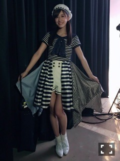
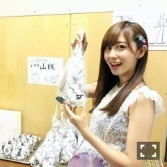

| 2016/09 24 Sat | 斎藤ちはる 決心のきっかけ(´>∀<｀)ゝ |
ちはるーむへようこそ！！
今日の山口公演をもって
アンダーライブ中国シリーズが
無事終了しました〜！！
わざわざ足を運んでくださった皆さん、
応援してくれた皆さん、
本当にありがとうございました！
客席にいる皆さんとの距離が近いから
皆さんの反応や声、一体感を
直に感じられる。
そしてその反応に対して
特攻もなければモニターも無い素舞台で
歌とダンス、表現力だけで
応えなければいけない。
誤魔化しが利かない、
そんなアンダーライブが私は好きです。
私今回のライブのラストスパートの部分が
大好きでした。
「何度目の青空か？」
「君の名は希望」
「命は美しい」
「自由の彼方」
「きっかけ」
それぞれの曲の歌詞に、
それぞれの込められた想いがある。
その想いを感じながら
歌詞を感じながら踊っていると
涙が溢れてきました。
特に何度目の青空か？を
踊っている時はやっぱりくるものがありました。
私はまだまだこの現状に満足していないし
もっと前に出たい。
もっと前で踊りたい。
もっと前で踊っている姿を
皆さんに見てもらいたい。
これからもまた一歩一歩進んでいくので
皆さん良かったら背中を押してください。
そして改めてアンダーライブを
出来ていること、
最初はお客さんが疎らだったのに
今では全国ツアーが開催できていること、
そのライブを観たいと思って
観に来てくれている皆さんに
本当に感謝しています。
支えてくれて、
アンダーライブが好きって言ってくれて
ありがとう。
今回のライブの衣装で
一番好きだったのは、
「海流の島よ」で着たこの衣装！

夏っぽくてマリンっぽくて
とっても可愛い！！
そしてベレー帽も好き。
程よくパールも付いてるんだよ〜♪
また着たいな(﹡ˆ ˆ﹡)
花奈！！
花奈の表現力とか
セクシーなダンスとか
いつも素敵だな〜って思って見てます。
私も見習わなきゃ！って
奮い立たされるんだ(﹡ˆ ˆ﹡)
-------------------------♡
今日は明日のコーナーと
日にちを交換して
ちは"食"散歩のコーナーにします( ◦˙ ˙◦ )
今日は、山口のケータリングに
突如現れた
「山賊焼き」を紹介します！

ライブ前になんだこれは！
ってなって驚いてる私。
中身は鶏の丸焼きでした！！
びっくりした！！
棒が刺さった鶏肉(足付き)に
甘辛なタレが染み込んでいて
とっても美味しい。
食べ応え抜群！
但しタレが溢れやすく、
かぶりつかないと食べれないので
外で食べるのは不向きかな？笑
でも美味しかったよ〜\( ˆoˆ )/
一緒に食べた山賊握りも
ぎっしりしてて美味しかった。
-------------------------♡
♬ ChihaMusic
「きっかけ」乃木坂46
今回のライブで
シークレットグラフィティの他に
唯一、フルサイズで歌った曲。
歌詞が本当にいい。
なんていい曲なんだろう。
いつもChihaMusic決める時に
歌詞を見ながら聞きながら決めるんだけど
泣きそうになってしまう。
"正解は分からないたった一度の人生だ"
何が正解かなんて誰もわからないんだから
自分が決めたたった一度の人生を
自信を持って進もうって思いました。
明日は個別握手会！！
全握では中々ゆっくり話せなかったから
明日はゆっくり楽しみましょう(﹡ˆ ˆ﹡)
皆さん待ってます♪
何着ようかな〜
って悩みながら寝ます！
おやすみ〜
斎藤ちはる